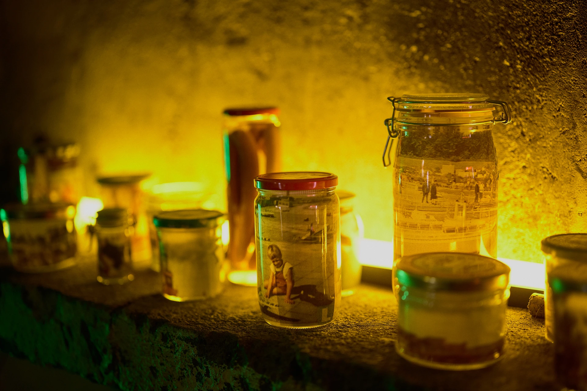
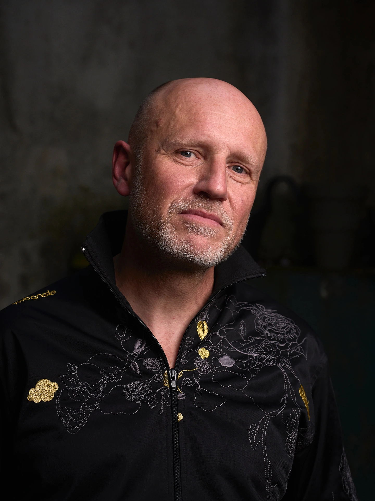

Parcours
Diplômes
- 2017 Doctorat en esthétique et sciences de l'art – Université Jean-Monnet, Saint-Étienne
- 2010 Master II en arts plastiques – Université Jean-Monnet, Saint-Étienne (mention très bien)
- 2000 Diplôme de composition électroacoustique – Conservatoire Jules Massenet, Saint-Étienne (mention très bien)
- 1993 Master I en philosophie de l'art – Université Paris X (mention bien)
- 1991 Licence de philosophie – Université Nancy II
- 1991 Licence de cinéma-audiovisuel – Université Nancy II
- 1990 Deug en culture et communication – Université Nancy II
Distinctions
- 2000 Médaille d'or en électroacoustique – Conservatoire Jules Massenet, Saint-Étienne
- 1999 Prix S.A.C.E.M. en composition électroacoustique
- 1998 Prix S.A.C.E.M. en composition électroacoustique
Langues : Anglais et allemand maîtrisés
Expérience professionnelle
Université Jean-Monnet, Saint-Étienne
- 2017–2023 Histoire des technologies – Master II Informatique musicale et Arts numériques (RIM/RAN)
- 2016–2023 Arts et spectacle – Licence arts plastiques
- 2021–2022 Arts et spectacle – Licence lettres modernes
- 2018–2019 Esthétique : « arts et discours » – Licence arts plastiques
- 2010–2016 Esthétique : « arts et territoire » – Licence arts plastiques
- 2011–2012 Méthodologie de l'approche artistique – Licence arts plastiques
Autres établissements
- 1997–2025 Français, histoire, arts appliqués, culture générale et expression (CAP, Brevet professionnel et BTS) – IMSÉ, Saint-Étienne
- 2008–2018 Artiste intervenant (DRAC Auvergne Rhône-Alpes) en électroacoustique et arts plastiques
- 2008–2009 Philosophie (carrières sociales et médicales) – Lycée Honoré d’Urfé, Saint-Étienne
- 1997–2000 Conférencier en français et communication – Cours Galien, Saint-Étienne
- 1998–1999 Arts plastiques – École de Solaure, Saint-Étienne
- 1996–1998 Français et communication – BTS – Institut Rural de la Loire, Saint-Étienne
- 1994–1995 Analyse de l'image – Lycée Marguerite Filhol, Fumel
- 1993–1995 Philosophie, lettres, histoire – Lycées et collèges – Académies de Paris et Bordeaux
Responsabilités scientifiques et artistiques
Coadministrateur du carnet de zoopoétique Animots (CNRS/EHESS/Sorbonne Nouvelle)
Membre de comité scientifique :
- Revue 2i (Centro de Estudos Humanísticos da Universidade do Minho de Braga – Portugal)
- Revue Captures - Figures, théories et pratiques de l'imaginaire (Université du Québec à Montréal)
- Atelier « Explorer le vivant sur la scène musicale jeune public » (ECLLA/ARTS – UJM)
Membre d’équipe de rédaction :
- Liminalités homme/animal/machine (Universidade do Minho de Braga – Portugal)
Contributeur invité :
Coorganisateur d’évènements scientifiques :
- JE « ANIMALENFANT : dans le champ des créations contemporaines » (Université Paul Valéry Montpellier III/RIRRA 21)
- Colloque « Chiens et imaginaire. Littérature, cinéma, BD » (Institut des Lettres et Sciences Humaines de l’Université du Minho de Braga)
Modérateur de colloque :
- « Penser et figurer l’animal à l’Époque moderne », carte blanche du Musée de la Chasse et de la Nature, Festival d’histoire de l’art de Fontainebleau 2022
Jury de diplôme :
- Création industrielle, ENSCI-Les Ateliers, Paris
Membre de l’Association Internationale des Critiques d’Art (AICA)
Commissaire d’exposition
- ANIMALENFANT - Lieu multiple, Montpellier
- Florian Poulin, Bêlik IncarnationS - Salle des Cimaises, Saint-Étienne
Publications
Ouvrage
- 2021
Articles
- 2025
- 2025
- 2024
- 2024
- 2023
- 2023
- 2023
- 2023
- 2022
- 2022
- 2021
- 2021
- 2021
- 2020
- 2020
- 2020
- 2019
- 2019
- 2019
- 2018
- 2018
- 2018
- 2016
- 2015
- 2015
- 2014
Entretiens
- 2025
- 2025
- 2025
- 2025
- 2025
- 2024
- 2024
- 2023
- 2023
- 2023
- 2022–2023
- 2022
- 2022
- 2022
- 2021
À propos de ma recherche
- 2023
- 2021
- 2021
Catalogues d’exposition
- 2023
- 2023
- 2022
- 2021
- 2019
Conférences
- 2025 « Le cerf, émissaire figuratif et symbolique », entretien avec Nicolas Salé, France Télévision, programme de Slow TV « Le Brame du cerf »
- 2025 « Les émotions du cheval de guerre », avec Diane Camproger et Léa Lansade, Éric Baratay (dir.) Atelier IUF 2e mandat « Pour une histoire équine des chevaux »
- 2025 Table-ronde « Comment pouvez-vous me manger ? Sculpteurs à l’épreuve de l’animal », autour de l’œuvre de Paul Troubetzkoy, Musée d’Orsay
- 2025 « L’enfant et l’animal : de l’art à l’histoire de l’art et retour », dialogue avec Fabien Lacouture (IRHiS, ULille), Atelier « Pouvoirs, normes et conflits – À travers les normes disciplinaires », IRHIS/Université de Lille
- 2025 « Pierre Huyghe : auprès de l’enfant-singe. Une fusion totale », journée d’étude « ANIMALENFANT : dans le champ des créations contemporaines », Université Paul Valéry/RRIRA21 - Montpellier III
- 2024 « Regards croisés. Proximité, hybridité et confusion », École d’hiver « Explorer le vivant sur la scène musicale jeune public », ARTS/RAMDAM - Saint-Étienne
- 2024 « Olivier de Sagazan, terre de transfiguration », journée d’études « Faire corps avec… la terre », ECLLA - UJM, Saint-Étienne
- 2024 « Autoportrait d’un chien. Kafka, Kulik…, l'exploration d'une conscience intermédiaire », séminaire de l’Université d’Artois « Penser l'intelligence animale aux XIXe et XXe siècles », Arras
- 2024 « Echo bestia », Musée Blanche Hoschedé - Monet, Vernon
- 2023 « Tom Tirabosco, l’enfant, l’animal et le monde. Pour une écologie dessinée », colloque « Lecture(s) éthique(s) en littérature de jeunesse contemporaine : représentations animales et écologie »
- 2023 « Le chat qui dort ou les formes de la leçon », colloque « Violent Child-Animal Encounters in Literature », Université Friedrich Schiller, Iéna (Allemagne)
- 2022 « D’après nature, les représentations de l’apocalypse ? », avec Ariane Carmignac, colloque « L’art et les formes de la nature », Collège des Bernardins, Paris / Université Paul-Valéry Montpellier
- 2021 Vincent Lecomte et Dominique Lestel, « Retours à l’animal(ité) : perspectives posthumanistes », rencontre organisée par l’Université Nouvelle de Lisbonne (Portugal)
- 2021 « Drôles d’événements ? La catastrophe vue à travers les formes de son remploi artistique », avec Ariane Carmignac, colloque international, ECLLA/Université de Lyon/UJM, Saint-Étienne
- 2021 « La mise à mort de la bête », journée d’étude « Nature mourante/Rethinking still-lifes », E.A. Cultures Anglo-Saxonnes, Université Jean-Jaurès, Toulouse
- 2020 « Patricia Piccinini, dans l’intimité de la chimère », journées doctorales du Laboratoire Litt&Arts/UGA, Grenoble
- 2020 « Dans le bestiaire lynchien : Reprise, détournement, réinvention », colloque international, CELEC/NEF, Festival Ciné Court Animé Roanne
- 2019 « La condition esthétique de la viande », journée d'étude, Maison de la Recherche/La Sorbonne, Paris
- 2019 « Le nid, architecture métaphorique ? », colloque international, CELEC/ENSASE, Saint-Étienne
- 2019 « Albert Bréauté et ses contemporains », conférence, Musée d’Allard, Montbrison
- 2018 « William Wegman : Un artiste dans un jeu de quilles. Le chien acteur d’une déconstruction iconique », président de séance du colloque international « Chiens et imaginaire. Littérature, cinéma, BD », Université de Minho (Portugal)
- 2018 « Le zoo revisité. Une sociologie picturale ? », journée d'étude, CNRS/PRISM/Université Aix-Marseille
- 2017 « La chimère. Dé-figurations », conférence, Musée d’Allard, Montbrison
- 2017 « L’a-métamorphose ou la chimère temporelle : Ovide, Kafka, Cronenberg », colloque international, Université de Minho, Braga (Portugal)
- 2016 « Geste, mémoire, territoire », colloque international, Musée de la Mine/UJM, Saint-Étienne
- 2014 « Comment Sophie Calle interroge-t-elle le corps par le territoire ? », journée d’étude, CIEREC, Saint-Étienne
- 2014 « Autoportrait de l’homme en chien », journée d'étude, UJM, Saint-Étienne
- 2013 « Le fragile désir de la ligne », journée d’étude, UJM, Saint-Étienne
- 2013 « Art et territoire : l'animalisation », conférence (et modération), CIEREC/Laboratoire de neuro-éthologie, Saint-Étienne
- 2012 « Mario Merz, penser du territoire », colloque international, CIEREC, Université Jean-Monnet, Saint-Étienne
À propos

Vincent Lecomte est chercheur, enseignant et artiste.
Docteur en esthétique et sciences de l’art, membre associé d’ECLLA (Études du Contemporain en Littératures, Langues et Arts), il enseigne en université et en centre de formation, l'esthétique, les arts appliqués et les lettres modernes.
Sa thèse, « Un Penser animal à l’œuvre », étudie les façons dont l’art convoque l’animal pour mettre en évidence d’autres consciences possibles du monde. Ses recherches le conduisent également à envisager la création contemporaine comme un espace d’expérimentation d’autres modes de représentation de l’action humaine sur son environnement.
Affilié à l’Association Internationale des Critiques d’Art (AICA), il fait notamment partie du comité scientifique des revues 2i et Captures. Figures, théories et pratiques de l'imaginaire. Il participe à l’organisation de colloques, l’élaboration d’expositions et de catalogues. Il est coadministrateur du site Animots (CNRS/EHESS/Sorbonne). Il a publié L’Art contemporain à l’épreuve de l’animal (L’Harmattan, juin 2021), ainsi que de nombreux articles scientifiques.
Vincent Lecomte est plasticien et compositeur. Dans un laboratoire permanent, le dessin, la composition sonore et l'image animée contribuent à alimenter une recherche prenant la forme de l’accrochage, l’installation, la projection ou le concert. Ainsi, il expose régulièrement en France et à l’étranger. Médaille d’or en composition électroacoustique, il réalise des pièces sonores diffusées en public, en radio ou intégrées à des œuvres plastiques.